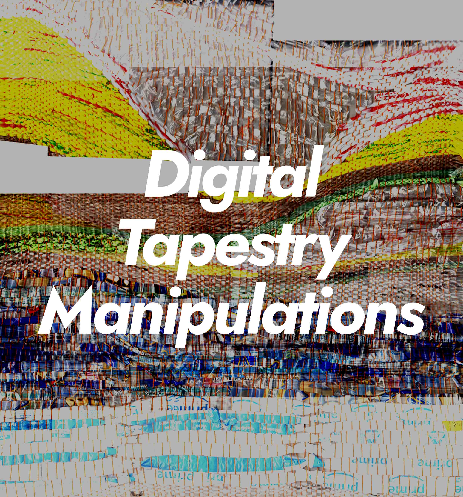
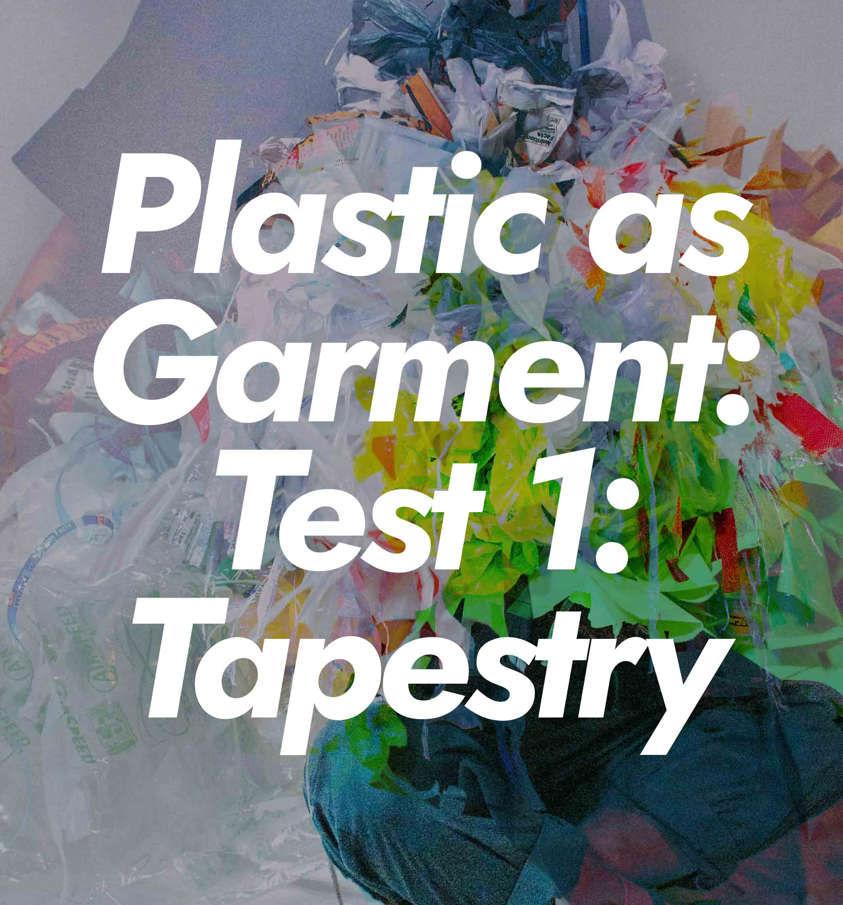
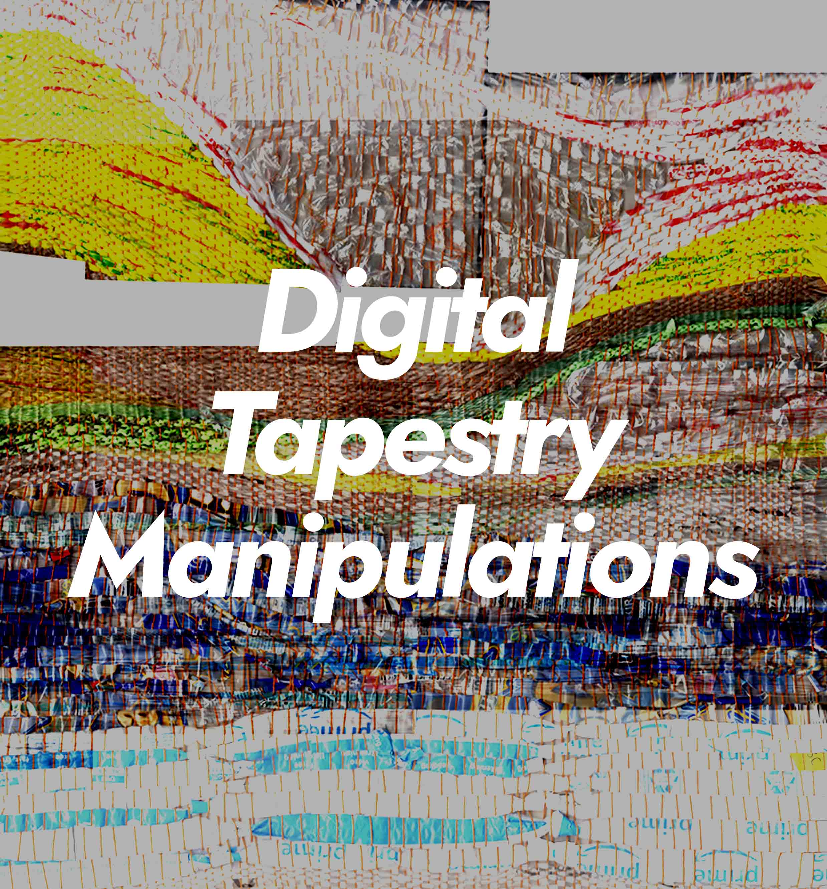
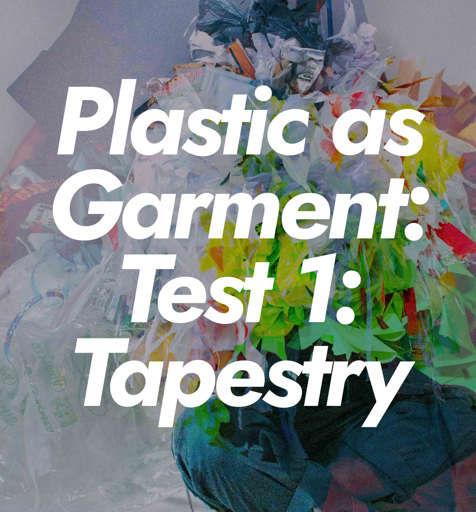

Plastic as fiber and material is a space of pure innovation and inspiration. Plastic is made to last but utterly disposable. Keeping this in mind throughout these projects, I want to uncover and explore all corners of reality that plastic finds itself—as garbage or as treasure.
Click the images within the gallery below to navigate the series.